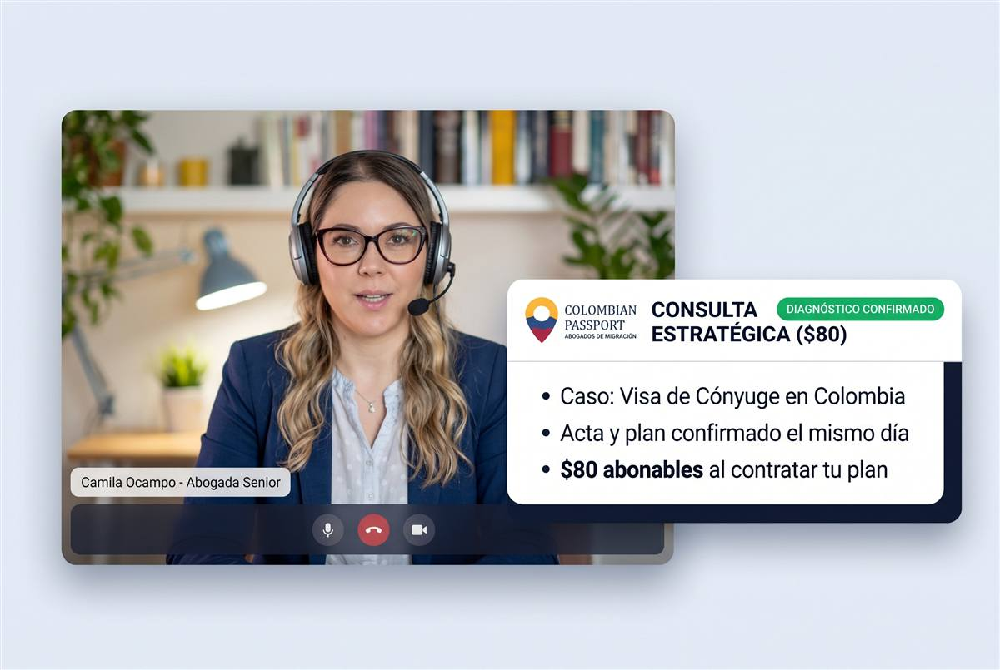
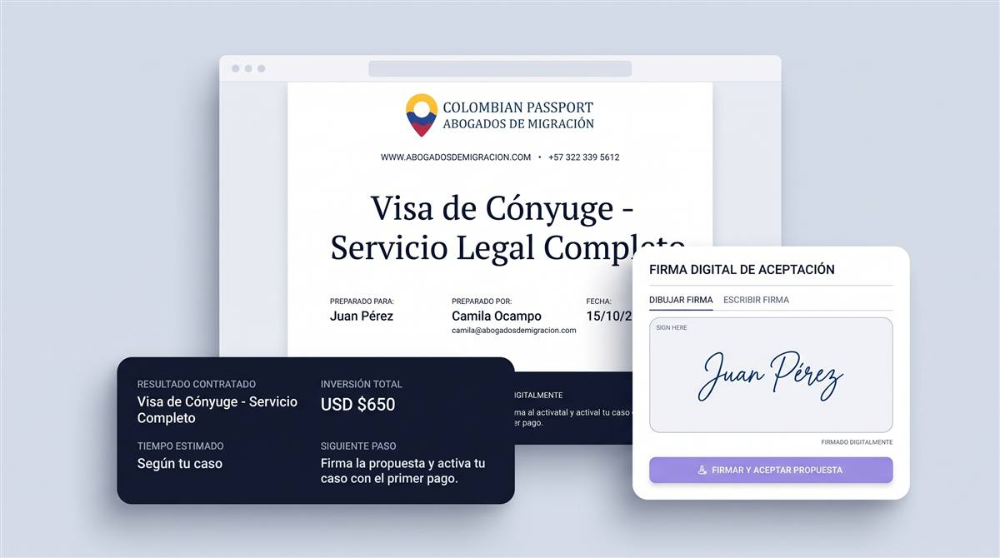
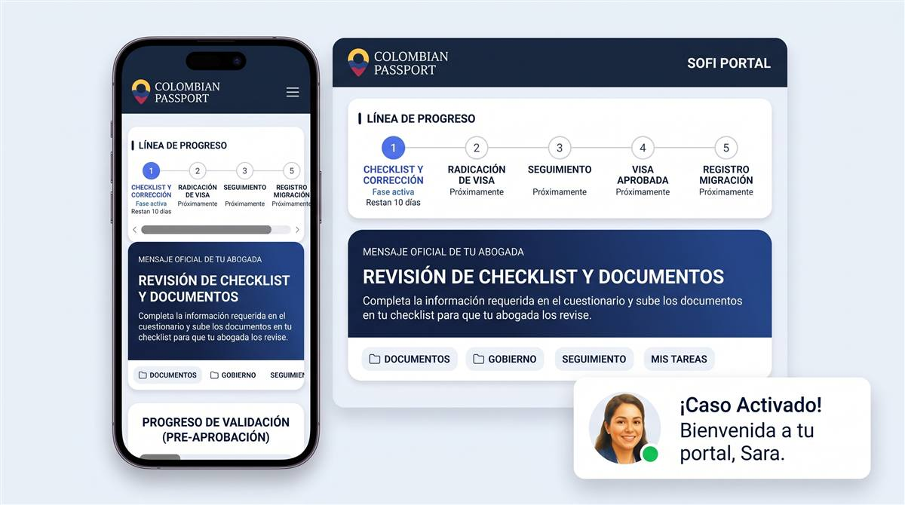
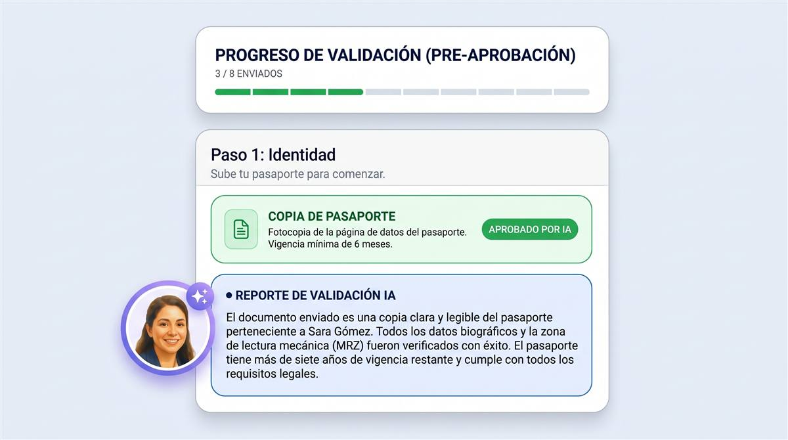
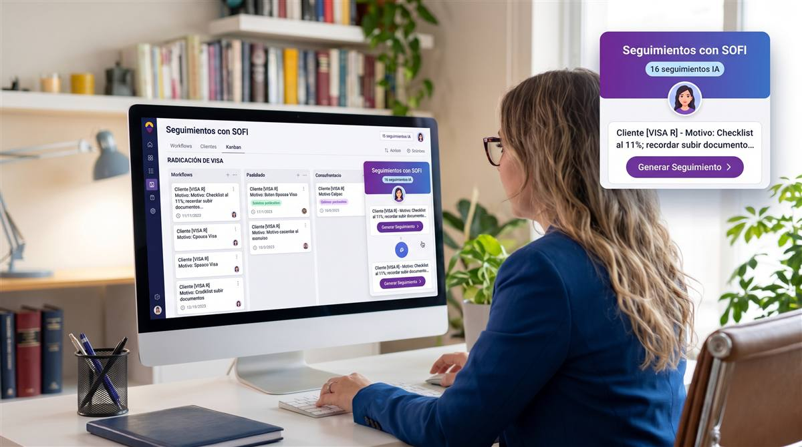

Tres cosas que no vuelves a hacer
No es “te ayudamos con el papeleo”. Es que el papeleo, las plataformas y los pagos dejan de existir de tu lado.
No llenas un solo formulario
No redactas cartas, no corres a notarías, no persigues traductores. Preparamos, apostillamos, traducimos y armamos el expediente completo. Tú no llenas un solo formulario.
No entras a ningún portal del Estado
No creas cuentas, no peleas con SITAC, con Cancillería ni con Migración Colombia, no persigues contraseñas ni el botón que no funciona. Radicamos nosotros, sin que entres.
No abres la billetera
Estudio, expedición, cédula y seguro médico van dentro del precio. El día de la biometría la pagamos nosotros, en la ventanilla, contigo. Ni un cobro sorpresa.
Por qué importa: cada una de esas tres cosas es una forma distinta de perder semanas. Un formulario mal llenado, una cuenta bloqueada o un pago hecho en la ventanilla equivocada retrasan el expediente igual que un error legal. Quitarlas de tu lado es el programa.
Cuatro compromisos
Nos hacemos cargo de todo lo demás —el control, el riesgo, la presencia y el acompañamiento— para que tu única tarea sea firmar la propuesta y aparecer.
El checklist y el calendario son nuestros
Qué falta, qué depende de un tercero y qué vence primero deja de ser tu trabajo. Lo llevamos nosotros en Sofi, con alertas y seguimiento diario: tú recibes el estado, no la lista de pendientes.
Rechazo e inadmisión están cubiertas
Si Cancillería devuelve tu solicitud, la volvemos a radicar las veces que sea necesaria hasta la aprobación: sin cobrarte honorarios y con las tasas de cada nueva radicación cubiertas por nosotros.
El día de la biometría no vas solo
Vamos contigo a Migración Colombia, pagamos la cédula en la ventanilla y estamos a tu lado en la fila. Si algo se complica, hablamos con los funcionarios en español y reclamamos tus derechos ahí mismo: que el idioma no sea tu límite. Después reclamamos tu cédula y, si estás fuera de Colombia, te la enviamos.
Tu primer mes, acompañado
En tu primer mes te ayudamos a contratar y dejar listos: arriendo, celular, cuenta bancaria, EPS (si tu visa la incluye), seguro privado de salud y coche. Revisamos los contratos antes de que firmes y preparamos los documentos que te piden. Incluido, no como extra.
Todo lo que la firma se obliga a hacer, punto por punto
- Construir una estrategia migratoria para tu caso.
- Darte acceso a Sofi, la app de gestión documental con IA de Colombian Passport.
- Asignar una abogada migratoria senior para liderar el caso.
- Construir las plantillas de los documentos necesarios según el checklist de la estrategia.
- Hacer la auditoría legal de cada documento que aportes.
- Ajustar tamaño, forma y formato de los documentos a los requisitos de las plataformas del gobierno.
- Solicitar y pagar todos los certificados de movimientos migratorios que exija tu visa.
- Construir el expediente según lo que exigen esas plataformas.
- Radicar el expediente en el SITAC.
- Monitorear el estado de la solicitud todos los días.
- Comunicarte los requerimientos y responderlos dentro del plazo.
- Comunicarte las inadmisiones y los rechazos, y volver a radicar sin honorarios hasta la aprobación.
- Notificarte las aprobaciones o los rechazos.
- Gestionar ante Migración Colombia el registro de la visa y la cita de biometría.
- Pagar las tasas del Estado (estudio y expedición) y la cédula de extranjería.
- Acompañarte en persona en la biometría y reclamar tu cédula.
- Enviarte la cédula al exterior si estás fuera de Colombia.
- Gestionar el seguro médico que exija tu visa.
- Acompañarte en tu primer mes: revisar los contratos y ayudarte a contratar arriendo, celular, cuenta bancaria, EPS si tu visa la incluye, seguro privado y coche.
- Responder tus inquietudes de forma oportuna y eficaz.
- Cumplir la política de privacidad de Colombian Passport.
- Avisarte a tiempo cuándo toca renovar y aplicar el 33% de descuento.
- Entregarte los documentos originales y definitivos del proceso.
- Entregarte las facturas originales de proveedores y del gobierno si las pides.
La comparación que importa
No es abogado contra no abogado, ni contra otro abogado: es quién lidera todo, desde el inicio hasta el final.
| Por tu cuenta | Cédula en Mano | |
|---|---|---|
| Quién arma el expediente | Tú, con guías y ChatGPT | Abogada Senior + IA Especializada |
| Quién consigue apostillas y traducciones | Tú, proveedor por proveedor | Nosotros coordinamos y pagamos cada uno |
| Quién entra a SITAC y responde requerimientos | Tú, sin saber qué espera Cancillería | Tu abogada, con táctica legal y seguimiento diario |
| Quién paga estudio y expedición | Tú, tasa por tasa | Incluidas en el precio |
| Si inadmiten o rechazan | Vuelves a pagar estudio y empiezas | Re-radicamos sin honorarios y cubrimos las tasas |
| Quién paga la cédula | Tú, en la ventanilla | Nosotros, contigo, en la ventanilla |
| Quién te acompaña en la biometría | Nadie: vas por tu cuenta | Vamos contigo y hablamos por ti si hace falta |
| Tiempo típico | 14–17 semanas | 7 semanas recomendadas con nosotros |
| Quién lidera el caso | Varios proveedores sueltos, y tú coordinando | La misma abogada, del inicio al final |
Los tiempos dependen de Cancillería y de la visa. Lo que sí controlamos nosotros es el expediente: cuando está completo, radicamos.
Tu caso es demasiado importante para el ensayo y error
Si tu futuro, tu familia o tus inversiones dependen de una visa colombiana, un solo error puede costarte meses de retraso, dinero o un rechazo directo. No necesitas un abogado para pedir tu visa, pero creemos que es una inversión inteligente.
"Mi consejo: no intenten este proceso sin asistencia profesional. Contraten a este eficiente equipo."
— Steven Russo, reseña real de Google verificada
Clientes que delegaron el papeleo
"¿Qué puedo decir de esta empresa y su equipo de abogados? En resumen, son excelentes, cultos, sinceros, actualizados con la ley a medida que cambia, y un equipo minucioso de abogados profesionales y honestos. Mi experiencia con Camila y su equipo ha sido nada menos que ejemplar; marcan el estándar que todos los abogados y empresas deberían tener. Su enfoque es muy profesional. Tuvimos una videollamada en la que revisamos mi situación actual, los requisitos, e hicimos una revisión preliminar del proceso y todos los resultados posibles. Me animaron a preguntar sobre todos los aspectos del proceso y los resultados posibles. Me interesaba mi caso y una visa de cónyuge, y me entregaron documentos escritos para ambos procesos junto con la documentación que yo debía aportar. Tras entregar los documentos, autenticados o apostillados, el proceso avanzó sin tropiezos con actualizaciones periódicas para mantenerme informado. During my process we ran into issues Durante mi proceso surgieron temas que yo desconocía. Fueron muy comprensivos, me explicaron lo necesario, los resultados posibles según las nuevas circunstancias, revisaron toda la documentación y me dieron la mejor opción para avanzar. En resumen, mi solicitud fue aprobada. Programaron mi cita biométrica, me dieron direcciones, horarios, los documentos que debía llevar, completaron algunos documentos necesarios (en español) y me guiaron en todo el procedimiento de la entrevista. Los honorarios fueron razonables (menos de lo que me cotizaron otras firmas), el proceso de apostilla fue excelente, terminado a tiempo y muy rentable (otras empresas me cobraban mucho más y con plazos mucho más largos). Me enviaron empresas que fueron a mi apartamento para las huellas y también citas médicas para los exámenes físicos. Importante para mí era una empresa que se comunicara en inglés (eran bilingües) y pudiera comunicarse con fluidez en inglés; fueron los mejores. Coordinaron todas las traducciones de documentos y verificaron que estuvieran correctas. Más importante aún: fueron receptivos y atentos a mis necesidades, y nunca me prometieron de más ni me dieron falsas esperanzas. Fueron totalmente honestos durante todo el proceso. Esta es una organización de servicio integral y la recomiendo ampliamente a TODAS las personas que quieran obtener una M-Visa para Colombia. Esta gente sabe lo que hace, conoce la ley y tiene varias opciones disponibles para su circunstancia específica dentro o fuera de Colombia."
"Tuve una experiencia fantástica trabajando con Camila. Me la recomendaron dos amigos extranjeros en Manizales que no se conocían entre sí, así que pensé que era una buena señal. Ojalá hubiera trabajado con ella desde el principio. Intenté tramitar mi visa de nómada digital por mi cuenta para ahorrar dinero, pero al enviar la solicitud, me la devolvieron inadmitida, así que acudí a Camila en busca de ayuda. Enseguida supo cómo mejorar mi solicitud y aumentar mis posibilidades de aprobación. También me dijo que había realizado muchos trámites innecesarios y pagado por servicios notariales, apostillas y traducciones innecesarias para ciertos documentos. Me ayudó a corregir la solicitud y a volver a presentarla, y me la aprobaron en una semana. Camila hizo que el proceso fuera mucho más fácil y menos estresante, ¡la recomiendo ampliamente!"
Más de 100 reseñas reales
Firma cinco estrellas en Google y Top 3 en Lawzana.
Reservar mi cupo →Cómo funciona: de la llamada a la cédula, sin caos
Un proceso diseñado para que nunca persigas un papel ni te preguntes qué sigue. Tecnología + abogada senior, de inicio a fin.

1Dejas tus datos
Completas el formulario con tu nombre, correo, teléfono, nacionalidad y la visa que te interesa. Camila revisa tu caso y te contacta; si prefieres, primero hablas 15 minutos con ella, gratis.

2Firma y primer 50%
Firma digital, factura legal automática y pago con tarjeta. Sin anticipos en efectivo ni vueltas. Desde aquí, las tasas del trámite ya no pasan por tus manos.

3Nosotros reunimos el expediente
Coordinamos antecedentes, huellas, apostillas, traducciones y seguro médico. Tú no entras a ninguna plataforma: en Sofi ves qué falta y qué ya está listo, desde el teléfono.

4La IA revisa, la abogada decide
La IA extrae datos, genera plantillas y detecta errores de tipeo. Tu abogada pone el criterio legal final antes de radicar.

5Radicación + segundo 50%
Radicamos en SITAC con el expediente completo y las tasas ya pagadas por nosotros. Trackeamos a diario, respondemos requerimientos y te avisamos cada vencimiento.

6Cédula y primer mes
Registro de visa, cita de biometría y cédula. Después, tu primer mes: te ayudamos a contratar arriendo, celular, banco, EPS si aplica, seguro privado y coche. Vamos contigo a la biometría, pagamos la cédula ahí y estamos en la fila a tu lado. La misma abogada que te recibió te acompaña hasta el final.
Conoce a tu abogada: Camila Ocampo

Fundadora y Socia Directora
Abogada de la Universidad de los Andes (2007). Más de 15 años de práctica, estudios avanzados en Derecho y Migración (Uniandes, 2025). Abogada Senior de Migración en BM Legal — antes, práctica corporativa en Transmilenio, Michelin Colombia (a través de López y Asociados) y derecho marítimo en Hincapié Molina. En BM Legal llevó la estrategia de visas de cientos de extranjeros.
Fundó Colombian Passport en 2024 con una regla: tu caso nunca es un expediente más — tratas directamente con ella, de inicio a fin. La firma opera 100% online, está registrada en España y es miembro de Colbar.
Práctica 100% senior. Sin juniors en casos.
Solo aceptamos casos con vía legal clara — y lo apostamos todo a tu visa. La misma abogada de inicio a fin.
Un precio fijo. Nada por fuera.
$4.500 USD con tasas, cédula y seguro incluidos · 50% a la firma y 50% a la radicación · 15 casos en la cohorte de enero de 2027.
Cédula en Mano
Tu visa, tu cédula y tu primer mes — sin papeleo, sin plataformas y sin pagar nada.
Cohorte de enero 2027 · cierra el 15 de enero
$4.500 USD
USD · todo incluido · 50% a la firma / 50% a la radicación
- Todo el servicio de visa: documentos, cartas, SITAC y seguimiento
- Tasas del Estado incluidas: estudio de $56 y expedición de la visa
- Cédula de extranjería incluida: la pagamos nosotros en la ventanilla, contigo
- Seguro médico incluido
- Coordinación total de terceros: antecedentes, huellas, apostillas y traducciones
- Certificados de movimientos migratorios: todos los que exija tu visa
- Checklist y calendario en nuestras manos, con seguimiento diario
- Respuesta a todos los requerimientos de Cancillería
- Re-radicación por inadmisión sin honorarios + tasas de la nueva radicación cubiertas
- Registro de visa y todas las citas de biometría y cédula, con acompañamiento presencial
- Primer mes acompañado: te ayudamos a contratar arriendo, celular, banco, EPS si aplica, seguro privado y coche
- Revisión de residencia fiscal y regla de 183 días
- Abogada senior de principio a fin
- Beneficiario: +$990 por persona, con todo incluido para esa persona
- Renovación con nosotros: $3.000 en vez de $4.500 (-33%)
Camila confirma tu cupo antes de que pagues nada.
La segunda vez cuesta menos
Cuando te toque renovar, vuelves al mismo programa por $3.000 USD en vez de $4.500: mismo alcance, misma abogada, mismo acompañamiento en la biometría.
Nuestra promesa: si inadmiten o rechazan tu solicitud, la volvemos a radicar sin cobrarte honorarios, las veces necesarias hasta la aprobación, y cubrimos las tasas de cada nueva radicación.
Cómo se paga: dejas tus datos → Camila revisa tu caso y te llama → te envía la propuesta por escrito con el precio fijo → contratas: 50% a la firma y 50% a la radicación → tu abogada ejecuta y te mantiene al tanto de cada paso.
Lo que ya está dentro de los $4.500
- Estudio de la visa: $56 USD por cada radicación, incluidas las re-radicaciones por inadmisión.
- Expedición de la visa: V $183 / M $279 / R $408 USD, solo si la aprueban.
- Cédula de extranjería: $294.000 COP, la pagamos nosotros en la ventanilla, contigo.
- Seguro médico: Continental Assist, el que exige la ley para tu visa.
- Apostillas, traducciones y antecedentes: los coordinamos y los pagamos nosotros.
- Movimientos migratorios: todos los certificados que pida tu visa, pedidos y pagados por nosotros.
- Citas, gestiones y trámites ante el Estado: todos, sin cobro adicional.
Para quién es — y para quién no
Aceptamos pocos casos, y no todos. Decir que no a tiempo también es parte del servicio.
Es para ti si…
- Hay algo importante que depende de tu visa: reunirte con tu familia, una inversión, tu jubilación o un negocio que quieres abrir.
- Tienes una vía legal clara (la confirmamos en la consulta).
- Puedes cubrir el programa y prefieres no volver a entrar a una plataforma del Estado ni a una ventanilla.
- Quieres una abogada senior liderando todo, no un pool de proveedores que tú tengas que gestionar.
- No dominas el español: los funcionarios y los proveedores no se van a adaptar a ti.
No es para ti si…
- Priorizas el ahorro sobre el tiempo. Es una decisión legítima, pero no es esta.
- Prefieres mantener el control de cada paso. Delegar implica soltar.
- Vas a aplicar a una visa de turismo o de visitante (V). Son trámites cortos y no necesitan este nivel de acompañamiento. Si tu proyecto en Colombia es de largo plazo, es al contrario: aquí encaja.
Lo que cambia cuando delegas de verdad
Lo que hace difícil tu visa no es sólo la ley: son los proveedores, las plataformas del Estado, los pagos, la facultad discrecional de los funcionarios y el miedo a equivocarse. Esto es lo que quitamos de tu lado.
Primera vez que abrimos el programa completo. $4.500 USD con las tasas, la cédula y el seguro incluidos, no solo los honorarios. El precio y los compromisos quedan fijos para quien entre en esta cohorte. No es un descuento: es acceso. Después del 15 de enero, la siguiente cohorte tendrá nuevas condiciones.
Respuestas directas, antes de preguntar
¿Cuál es su tasa de éxito?
En los dos años que lleva operando la firma: 332 aplicaciones, 325 aprobaciones, 3 rechazos y 4 abandonos. Y más de 100 testimonios con 5 estrellas en Google y Lawzana.
¿Por qué crearon Cédula en Mano?
Porque hay personas que necesitan mucha más ayuda de la que encuentran. Casos que se atascan en el pago porque su tarjeta no pasa en las plataformas del Estado —ahí pagamos con la nuestra y lo resolvemos—, personas que no se sienten seguras en español y para quienes la cita de biometría es una fuente de estrés real, y pensionados obligados a usar plataformas anticuadas que funcionan mal. Este programa existe para que esa parte del proceso no la cargues tú.
¿Qué significa exactamente “no toco un papel”?
Que no redactas cartas, no llenas formularios y no persigues notarías, traductores ni proveedores. Nosotros preparamos, apostillamos, traducimos y armamos el expediente completo. Tú solo apareces en la biometría y en tu examen médico. No significa que no existan documentos: significa que no pasan por tus manos.
¿Tengo que entrar a alguna plataforma del Estado?
No. No creas cuentas, no entras a SITAC, a Cancillería ni a Migración Colombia, no persigues contraseñas ni códigos de verificación. Radicamos nosotros, respondemos los requerimientos y te enviamos cada documento aprobado. La única diligencia presencial es la toma de datos biométricos para la cédula, y ahí te acompañamos.
¿Qué tengo que pagar yo?
Nada por fuera. El estudio de $56, la expedición de la visa, la cédula de extranjería, el seguro médico, las notarías, los certificados y los movimientos migratorios van dentro de los $4.500. La cédula la pagamos nosotros en la ventanilla, el día de la biometría, contigo.
¿Con quién es el seguro y qué cubre?
Con Continental Assist. Incluye todas las coberturas que la ley exige para tu visa. Ojo: no es un seguro de salud; cubre urgencias y repatriación, que es lo que la norma pide para el trámite. Si además quieres un seguro médico completo, en el primer mes te ayudamos a contratarlo.
¿Quién paga la cédula y quién me acompaña?
Nosotros. La cédula de extranjería ($294.000 COP) la pagamos en la ventanilla de Migración Colombia el día de la toma de datos biométricos, y vamos contigo: te esperamos a la hora que te asignen —mañana o tarde—, hacemos la fila a tu lado y, si algo se complica, hablamos por ti y reclamamos tus derechos. Migración permite acompañante, así que no tienes que enfrentar ese día solo ni en un idioma que no dominas.
¿Qué incluye y qué no incluye?
Incluye el servicio completo de visa, la coordinación y el pago de terceros (antecedentes, huellas, apostillas, traducciones, movimientos migratorios), las tasas del Estado (estudio y expedición), la cédula de extranjería, el seguro médico, el checklist y el calendario en nuestras manos, la respuesta a requerimientos, la re-radicación por inadmisión sin honorarios y con las tasas cubiertas, el registro de visa, las citas de biometría y cédula con acompañamiento presencial, y el acompañamiento del primer mes (te ayudamos a contratar arriendo, celular, banco, EPS si aplica, seguro privado y coche).
¿Cuánto cuesta y cómo se paga?
$4.500 USD todo incluido, en dos pagos: 50% a la firma de la propuesta y 50% a la radicación. Con tarjeta y factura legal. Cada beneficiario suma $990, con todo incluido para esa persona: sus tasas, su cédula y su seguro.
¿Cómo se confirma mi cupo?
Al enviar el formulario no pagas nada: Camila revisa tu caso y te envía la propuesta por escrito. El cupo queda reservado cuando firmas la propuesta y pagas el primer 50%. Hasta entonces sigue disponible para otros.
¿Y cuando tenga que renovar mi visa?
Vuelves al mismo programa por $3.000 USD en vez de $4.500: un 33% menos, con el mismo alcance, la misma abogada y el mismo acompañamiento en la biometría. El descuento aplica a la renovación del mismo plan.
¿Y si inadmiten o rechazan mi solicitud?
La volvemos a radicar sin cobrarte honorarios, las veces necesarias hasta la aprobación, y cubrimos las tasas de cada nueva radicación. Si el rechazo es definitivo, la norma exige esperar 6 meses antes de volver a aplicar: te lo decimos y lo preparamos en ese tiempo.
¿Y si mi caso no es viable?
Te lo decimos antes de que pagues nada y no te vendemos el programa. Si no hay vía legal clara, te explicamos por qué. Preferimos un no honesto hoy a un expediente condenado en tres meses.
¿Por qué solo 15 cupos?
Porque cada caso lo diagnostica Camila y lo ejecuta una abogada senior. Quince es lo que podemos hacer en una cohorte sin bajar la calidad ni convertirte en un expediente más. Cuando se llenan, se cierra.
¿Aplica a cualquier visa? ¿Puedo hacerlo desde mi país?
Aplica a cualquier visa colombiana con vía legal clara: pensionado, nómada digital, cónyuge, rentista, inversionista, trabajador, residente y las demás. Se puede hacer desde Colombia o desde tu país de residencia: nosotros radicamos y la biometría se hace cuando llegas. No aplica a rechazos definitivos ni a casos sin ruta legal.
¿Qué pasa si no alcanzo la cohorte de enero?
Entras a la lista de espera de la siguiente cohorte y te avisamos antes de abrirla. Si ya dejaste tus datos, tu diagnóstico sigue vigente.
Reserva tu lugar en Cédula en Mano
Déjanos tus datos: revisamos tu caso y te enviamos la propuesta. El cupo se confirma al firmarla y pagar el 50%.
¿Tienes dudas antes de reservar?
15 minutos gratis con Camila Ocampo
Si no quieres decidir sin hablar con ella, reserva una llamada corta: revisamos tu caso en general, resolvemos tus dudas y sales sabiendo si Cédula en Mano es para ti. Sin costo y sin compromiso.
- 15 minutos por videollamada, con Camila.
- Sin costo y sin obligación de contratar.
- En español o en inglés, como te resulte más cómodo.
Gratis · 15 minutos · con Camila
Entre semana, por la mañana · Horas en tu huso horario